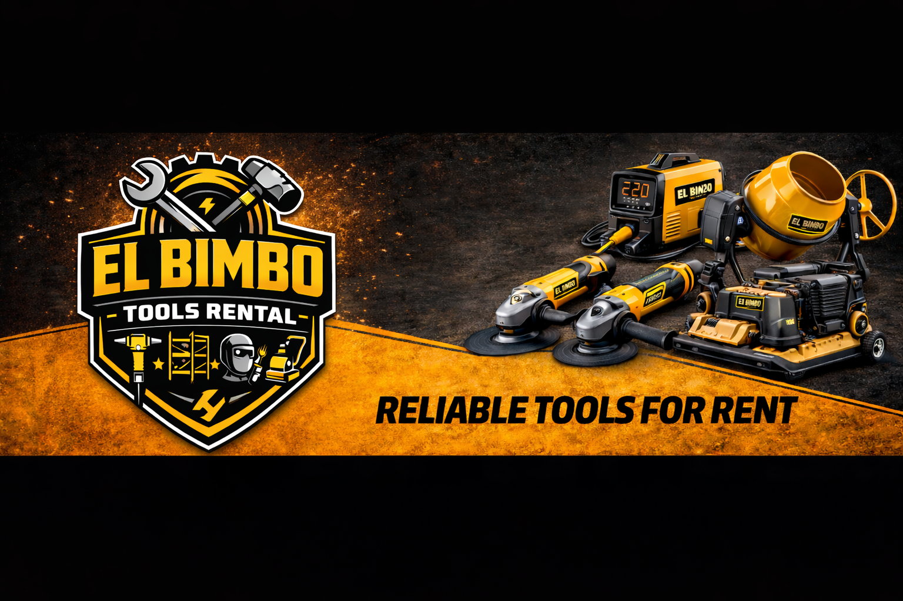

Reliable Tools for Rent
Heavy-duty rental tools for real construction work
El Bimbo Tools Rental provides practical and affordable equipment for contractors, workers, and homeowners in Sto. Tomas, Batangas. Built for demolition, fabrication, concrete work, and renovation projects.

DailyFlexible rentals
BulkPackage pricing
LocalSto. Tomas
FastEasy inquiry
About Us
Dependable equipment, fair rates, straightforward service.
El Bimbo Tools Rental provides reliable construction and renovation tools for contractors, workers, and homeowners. We help customers finish projects faster without the high cost of buying equipment.
Vision: To become a trusted tools rental service in the community.
Mission: To provide affordable, well-maintained tools that support faster and easier project completion.
Affordable daily and weekly rentals
Project-ready equipment
For contractors and homeowners
Serving CALABARZON